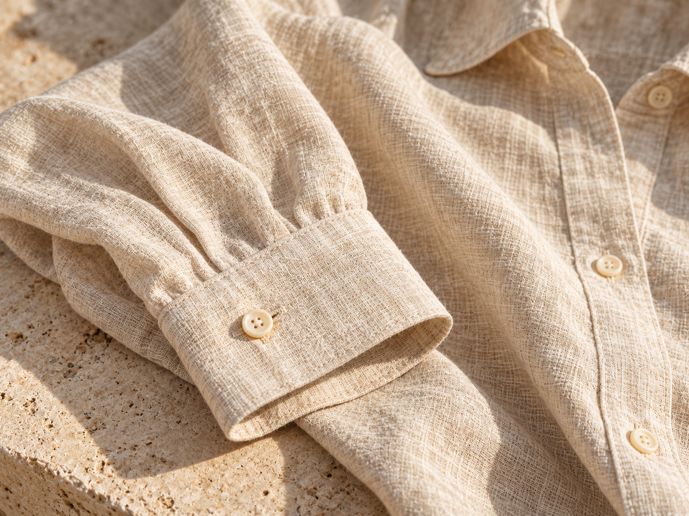

A FIT YOU CAN UNDERSTAND
Room to move.
Room to be you.
The Everyday Linen Shirt has a relaxed fit, with a little extra room through the body and sleeves.
- Dropped shoulder, easy through the body
- Choose your usual size for a relaxed fit
- Compare with a shirt you already love
Measurements below are of the garment, not the body.
Garment measurementscm | inches
| Size | Chest | Shoulder | Length |
|---|---|---|---|
| XS | 94 | 38 | 67 |
| S | 98 | 39 | 68 |
| M · selected | 102 | 40 | 69 |
| L | 106 | 41 | 70 |
| XL | 110 | 42 | 71 |
Lay your garment flat. Measure across the chest and double the value.

THE FABRIC, UP CLOSE
Natural texture.
Everyday character.
100% linen with a softly textured finish. Small variations in the weave are part of its character.
Gentle cold washLine dry in shadeWarm iron if needed